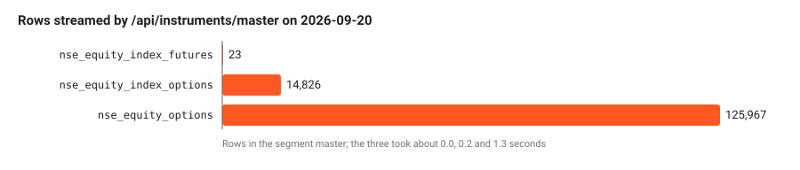

Design choices
Source:vignettes/articles/architecture-design-choices.Rmd
architecture-design-choices.RmdThis article records the decisions that shape the package. Each record says what problem the decision solves, what was chosen, why, and what it costs, and it names the files where you can see the decision in the code. Most of them come down to one idea: UBI already holds the rules and the data, so this package should pass requests through to it rather than keep a second copy that could drift.
The package is a native R port of the Python library
tradingmachine, so the records come in two groups. The
first twelve were made for the Python library, and the R port kept every
one of them; where the R form differs, the record says how. The records
after them are choices the R port made itself, which the sidecar notes
under .claude/notes/R/ describe in more detail.
The decisions at a glance
The table below lists every record in this article with its main benefit and its main cost.
| Decision | What it buys | What it costs |
|---|---|---|
| Value members are active bindings | Code reads as what a value means, share$last_price
|
Each read is a request, with no brackets to warn you |
| No caching or date-range batching around UBI | A value is never stale, and there is no cache to invalidate | Repeated reads repeat requests |
| No local tick or lot validation | One source of truth for exchange rules | A bad price is found by a round trip, not before it |
| Plain strings rather than enums | No second list of allowed values to keep in step | A typo is caught by UBI, not by your editor |
| Row lists become data frames | Orders, trades and candles filter and sort directly | “No rows” is NULL rather than an empty data frame |
| Order types are built in UBI, not here | One implementation of each order type | Every order depends on UBI’s order engine running, and a plain limit order is held there rather than sent |
| One self-contained class per case | Each class can be read, fixed and changed alone | The same code is repeated across classes, except where the derivative bases hold it once |
| A derivative is given its underlying, or finds it in a fixed order | Nearly every contract has a priced underlying with no extra argument | Only a given object is free; the rest are looked up on every read |
| Greeks are computed here, with Black-76 or Black-Scholes | Implied volatility and greeks without a UBI route | A slightly different model from UBI’s engine |
| Discovery reads the master rather than search | Live contracts are always found | A whole segment is downloaded on each call |
| Baskets are stored here and linked to instruments | Index and fund contents that UBI does not keep, analysed like an instrument | The contents are only as current as the last import |
| Inherited methods are linked, not repeated, in the reference | Reference pages of a usable size | A family class’s page links to the analysis methods rather than showing them |
| Every class is an R6 class | Objects that behave like Python’s, with the same names and the same calls | A dependency on the R6 package |
| The analysis classes form one chain | Every analysis method on every instrument and basket, with single inheritance | Private method names must be unique along the whole chain |
| Class methods become functions on the class generator | The Python calls, such as Equity$search(), keep their
shape |
Each family class writes its functions out, because generators do not inherit them |
| Errors are conditions with the Python class hierarchy |
tryCatch() handlers catch a family of errors, as
Python’s except does |
A table of parent classes to keep in step with the Python modules |
| Indicators come from the talib package, with gaps filled in base R | The same TA-Lib calculations as Python, matched to the last bit or within 1e-9 | 29 functions written in base R, and one known difference in a rare case |
| Backtests run on a native R engine | The same trades and statistics as backtesting.py, with no Python | Eight classes to maintain, renamed strategy hooks, and a plainer plot |
| Base R instead of the tidyverse | Code a one-year R user can follow, with few dependencies | Some pandas behaviour had to be written out by hand |
| The shared client lives in the package environment | One client per session that survives
devtools::load_all()
|
One R-only function to install a client by hand |
Value members are active bindings
The problem. Some members of an instrument only report a value, such as the last price or the open orders, while others take arguments or act on the market. Until 2026-09-22 the Python library’s rule was that anything fetched over HTTP was a method, because Google style guide rule 2.13 allows a property only for a cheap computation. That left half the live values as properties and half as methods, and the split followed how a value was fetched rather than what it meant.
The choice. Any member that only reports a value is
a Python @property, and in R an active binding, which is
read without brackets and signals an error when assigned to. A member is
a method only when it takes an argument, such as
prices(interval, days), or when it writes to the market,
such as place_order() or cancel_open_orders().
The user decided this on 2026-09-22. When a method with an optional
filter became a property, the filter was dropped:
orders(status = None) became the orders
property, and a caller who wants one status filters the
status column.
Why. The caller should read what a member means.
share$last_price is the share’s last price, and the fact
that it comes over HTTP from a service on the same machine is a detail.
UBI answers from its own Redis, so the cost argument was weaker than it
looked, and the members that report what the account owns, such as
net_positions, were already properties.
The cost. A loop that reads the same active binding twice sends two requests, and there are no brackets to hint at it. Code that needs a value more than once assigns it to a local variable.
In the code. R/assets_instruments.R,
where quote, last_price, ohlc,
the eleven order-book values, the order and trade readers and the
position readers are all active bindings, and
R/assets_equities.R for the holdings readers.
No caching or date-range batching around UBI
The problem. The old tradingmachine project cached candles in Redis for five minutes and quotes for five seconds, kept the cache warm with a poller, and split long date ranges into batches. Each indicator method fetches its own candles, so the same candles can be fetched many times.
The choice. Every call goes straight to UBI. There is no cache, in Redis or in memory, no poller and no batching of date ranges. The user decided this on 2026-09-14.
flowchart LR
I["instrument$relative_strength_index()"] --> C["shared client"]
C -->|"one GET /api/instruments/prices<br/>for the whole range"| U["UBI"]
U --> R[("UBI's own Redis<br/>and TimescaleDB")]
Why. UBI runs on the same machine and already caches
in its own Redis, and its /prices route serves any date
range in one request. A second cache here would add a second place for a
value to go stale, and a stale expiry list or quote is a worse failure
than a slow one.
The cost. Repeated reads repeat requests. Asking a
derivative class for its expiries and then for a chain downloads the
segment master twice, about four seconds for single-stock options. The
members that need two values from one moment,
bid_offer_spread and mid_price, read both from
a single quote so that they never mix two moments. If the cost ever
matters, the answer is a measurement first, not a cache added in
advance.
In the code. R/assets_instruments.R,
whose class documentation says every call goes straight to UBI’s REST
API. The reasoning is under “No caching and no batching” in the Python
library’s note
.claude/notes/src/tradingmachine/assets/instruments.py.md.
No local tick or lot validation
The problem. An order whose price is not a multiple of the tick size, or whose quantity is not a whole number of lots, will be refused. The package could check this before sending, or round the price itself.
The choice. Prices and quantities are sent exactly as the caller gave them, with no tick rounding, no lot-multiple check and no expiry check. The user chose this on 2026-09-20 over both raising an error locally and rounding silently.
Why. UBI and the broker behind it hold the
authoritative rules, and UBI reports lot_size and
tick_size as missing whenever its brokers disagree, so a
local check would sometimes have nothing to check against. A refusal
from the broker is the correct and informative failure. Where a price is
worked out rather than given, UBI now rounds it to the tick itself,
towards the passive side.
The cost. A malformed order costs a round trip to be
refused, instead of failing before it leaves your R session. On
commodities in particular, quantity = 1 on an MCX gold
future is refused with HTTP 400, because the quantity is counted in
quotation units and one lot is 100.
In the code.
TradeableInstrument$place_order() in
R/assets_instruments.R, whose documentation says the values
are sent exactly as given, and SyntheticOrder in
R/orders_synthetic_order.R, which validates nothing before
sending.
Plain strings rather than enums
The problem. Orders use a fixed vocabulary:
buy or sell, market or
limit, cnc, mis or
nrml. It could be wrapped in named constants or a factor of
allowed values.
The choice. Vocabulary that UBI already validates is
passed as plain character strings, such as "buy",
"limit" and "mis". The same holds for
exchange, segment, option_type
and the candle interval. The user confirmed this on
2026-09-20.
Why. UBI rejects an unknown value with a clear message. A local list of allowed values would be a second list that has to be kept in step with UBI’s, and it would drift the first time UBI added a value.
The cost. A typo is caught by UBI at run time rather than by your editor. The Vocabulary article lists every accepted string.
In the code. Package constants are still used for
values this package itself chooses and reuses, such as
INSTRUMENTS_INDEX_SEGMENT_SUFFIX in
R/assets_instruments.R and the segment names such as
EQUITIES_EQUITY_SEGMENT in
R/assets_equities.R. The rule is about mirroring UBI’s
vocabulary, not about avoiding constants.
Row lists become data frames
The problem. Several UBI routes return many rows of the same shape: candles, the order book, the trade book, positions, the instrument master. They could be returned as lists of named lists.
The choice. A member that wraps such a route returns
a base R data.frame, where the Python library returns a
pandas.DataFrame. A member that returns a single record,
such as one holding, returns a named list, where Python returns a
dict. When UBI has no rows at all, the member returns
NULL rather than an empty data frame. The user chose this
for the Python library on 2026-09-20, and the R port keeps the same
columns in the same order.
Why. It is consistent with prices(),
which already built a frame from UBI’s candles, and a table of orders or
trades is far easier to filter, sort and inspect as a data frame. A
one-row data frame would be awkward to read a single value from, which
is why single records stay named lists.
The cost. Callers must check for NULL
with is.null() before using a data frame. A nested object
inside a row, such as a position’s pnl, becomes a list
column, so frame$pnl[[1]]$realized reads it.
In the code. prices(),
orders, trades, net_positions and
the other readers in R/assets_instruments.R, the discovery
functions search, contracts and
chain on each family class, and FrameBuilder
in R/utilities_frame_builder.R, which turns UBI’s rows into
a data frame and back.
Order types are built in UBI, not here
The problem. Until 2026-09-26 the Python library’s price wrappers read the order book themselves, worked out a price and sent it, and the position methods read the position and worked out the side and size. On 2026-09-23 UBI gained an order engine that can do all of this itself, plus 42 synthetic order types, which grew to 53 on 2026-09-27.
The choice. Anything UBI can work out is sent as a
description: a price_reference, a
quantity_reference or a synthetic named list.
The user decided this on 2026-09-26, saying that the order types being
created here no longer needed to be, because they had been added in UBI.
The wrappers kept their names and signatures and stopped reading the
book, and the R/orders_*.R files hold one thin class per
synthetic type that only describes the order and sends it.
flowchart LR
subgraph Before["Before 2026-09-26"]
W1["buy_at_mid_price"] -->|"GET quote"| U1["UBI"]
W1 -->|"POST the midpoint it worked out"| U1
end
subgraph After["After"]
W2["buy_at_mid_price"] -->|"POST price_reference kind mid"| U2["UBI engine<br/>reads quote, rounds to tick"]
end
Why. Keeping each order type in one place avoids two implementations that diverge. It also fixed two real faults: the price is now read immediately before the order is placed rather than one request earlier, and a midpoint is rounded to the tick instead of landing between ticks where the exchange refuses it. For the R port the choice paid off again, because there was no order logic to port, only request bodies.
The cost. Every order depends on UBI’s order engine,
and when it is not running UBI refuses the order with HTTP 503. Until
UBI removed its direct placement mode on 2026-09-27, the Python
place_order also had to send a dry run before the first
such order to prove the engine was in use. UBI’s engine also makes
choices of its own, such as holding a plain limit order until the book
reaches its price, which Order
engine describes. An empty or shallow order book comes back as UBI’s
HTTP 503, ServiceUnavailableError, and the old local
OrderError was deleted.
In the code. place_order() and the
wrappers in R/assets_instruments.R, and every
R/orders_*.R file. When a new order convenience is wanted,
the first question is whether UBI already offers it; if it does not, it
belongs in UBI.
One self-contained class per case
The problem. The six classes of an asset family
differ only in a segment constant, a base class and an error class, and
the synthetic order types differ only in their settings. Each group
could be one parameterised class, or a hierarchy of intermediate bases
such as Futures and Option.
The choice. Each case is its own class, written out
in full, with a shallow base only where the mechanism is genuinely
identical. Each asset-class file is copied from the equities one rather
than sharing code with it, even the roughly 180 lines of holdings logic,
and each synthetic order type is its own class in its own file over a
shallow SyntheticOrder base that holds only storing the
template, building the synthetic list and sending it.
The derivative classes are the one place where a middle layer was
added. Until 2026-09-28 every family class inherited
TradeableInstrument or NonTradeableInstrument
directly. On that day the user asked for Derivative,
Futures, Option, IndexFutures and
IndexOption, which hold what every contract shares, and the
sixteen futures and option classes now inherit them. Each family class
still keeps its own constructor, error class and documentation, and
names its segment in a package constant such as
EQUITIES_EQUITY_FUTURES_SEGMENT.
flowchart TB
T["TradeableInstrument"] --> D["Derivative<br/>expiry, underlying"]
D --> F["Futures<br/>basis"]
F --> A["EquityFutures<br/>segment, constructor, error,<br/>expiries, contracts"]
F --> B["CommodityFutures<br/>segment, constructor, error,<br/>expiries, contracts"]
F --> C["CurrencyFutures<br/>segment, constructor, error,<br/>expiries, contracts"]
Why. A reader can open one file and see everything one kind of contract does, and a change to one class cannot break another. The user prefers some duplication over a shared abstraction that every case has to be read through. The derivative bases pass the same test from the other side: every contract member, such as days to expiry or the basis, is the same calculation in every family.
The cost. The same code is repeated, so a fix to the
holdings logic has to be made in five classes. Errors are flat siblings
under InstrumentError, so there is no single handler for
“anything in the equity family”; catch the contract’s own error, or
InstrumentError for any instrument problem. In Python the
discovery class methods expiries, contracts,
strikes and chain are written once on the
derivative bases. In R they are written out on each family class’s
generator, as Class
methods become functions on the class generator explains, but each
is a short call into the shared InstrumentCatalogue.
In the code. The six family files
R/assets_equities.R, R/assets_fixed_income.R,
R/assets_commodities.R, R/assets_currencies.R,
R/assets_funds.R and R/assets_mutual_funds.R,
the five derivative bases at the end of
R/assets_instruments.R, R/assets_exceptions.R,
and the R/orders_*.R files. The mechanism that is truly
identical, such as the discovery helpers, sits on
InstrumentCatalogue.
A derivative is given its underlying, or finds it in a fixed order
The problem. A future or option is written on
something, and most of its useful figures, such as the basis and the
greeks, need that thing’s price. UBI has no reliable join: only the
underlying_symbol string matching an instrument’s
symbol, and not every underlying carries it. And for
commodities and currencies the thing matched by name is a reference
record with no price.
The choice. A contract tries four ways in order. An
object given as underlying = when it is built wins. Then
UBI’s underlying_instrument_id, resolved in UBI from the
brokers’ own records of each contract’s underlying. Then the family’s
default: an equity’s share or index by symbol, and for an option on a
commodity, a currency pair or a bond the future on the same underlying
that expires first on or after it; a future outside equities has no
default. Last, UnderlyingError says plainly that nothing
was found. Only a given object is stored. The user asked for the given
object, then for the whole order, on 2026-09-28.
Why. A check of UBI’s database that day counted the
198,122 live derivatives. Names found 96.1 per cent of underlyings, the
brokers’ codes fixed the two real mismatches, NIFTYFPI and
SENSEX50, and 98.9 per cent of options had a future to be
priced off. Each way covers what the one before it misses, and the order
puts the most certain first. Renaming the two mismatched indices in UBI
was considered and rejected, because a new name gives an index a new
instrument_id and strands its price history.
The cost. Nothing checks a given object against
underlying_symbol, so a wrong one gives wrong figures
silently. Only a given object is free; the others send a request or two
on every read. UBI has served its link since 2026-09-28, and holds it
for mapping dates from 2026-09-22; earlier dates have none.
In the code. The private methods
look_up_underlying() and nearest_future() of
Derivative, and the package constant
INSTRUMENTS_UNDERLYING_SEGMENT_FOR_DERIVATIVE_SEGMENT, in
R/assets_instruments.R. Derivatives
documents the order.
Greeks are computed here, with Black-76 or Black-Scholes
The problem. An option trader wants implied volatility and the greeks, and UBI has no route for either.
The choice. Option$implied_volatility()
and Option$greeks() work them out locally, in
R/assets_option_pricing.R, from the option’s and the
underlying’s last prices. The user chose this on 2026-09-28. An option
priced off a future uses Black-76, and any other uses Black-Scholes; the
user asked for Black-76 later that day, once options on commodities,
currencies and bonds started defaulting to a future.
Why. This is analysis, like the technical
indicators, rather than order behaviour, so it does not cut across the
rule that order types belong in UBI. The maths needs only base R, with
stats::pnorm() for the cumulative normal distribution where
the Python code uses math.erf. The two give the same
function, and on 2026-10-07 the R and Python models agreed to ten
decimal places on every price, greek and implied volatility checked.
The cost. An equity option is still priced with Black-Scholes on the spot, while UBI’s engine uses Black-76 on the forward, so the two can differ slightly for an index option. Both models assume a European option without dividends, expiry at 15:30 India time, and a risk-free rate of 0.065 unless the caller gives one.
In the code. R/assets_option_pricing.R
and the Option class in
R/assets_instruments.R.
Discovery reads the master rather than search
The problem. To find a contract you do not already
know, such as this week’s NIFTY options, you need UBI’s list of
instruments. UBI’s /api/instruments/search route sorts by
expiry ascending, caps its answer at 200 rows and takes no offset. Asked
for NIFTY index options on 2026-09-20, it returned 200 rows that all
shared an expiry four weeks in the past.
The choice. search on a cash or index
class uses /api/instruments/search, which ranks exact and
prefix matches first and is right for finding a name.
expiries, contracts, strikes and
chain on the derivative classes read
/api/instruments/master, which streams the whole segment
with no cap, and filter it here. Expired contracts are left out unless
include_expired = TRUE, and a contract expiring today, in
India time, still counts as live.
The chart below shows how much of each segment the master had to stream on 2026-09-20, and how long it took.

Why. With search, every live contract in a busy segment sits permanently behind thousands of expired ones. The master is complete, and because UBI runs on the same machine even 125,967 rows arrive in about 1.3 seconds.
The cost. Each discovery call downloads its whole segment again, with no cache. The calls return a data frame of identities rather than instrument objects, because a 214-contract chain as objects would mean 214 lookups; the caller builds the few contracts it wants.
In the code. The methods search(),
master(), contracts_for(),
expiry_dates(), strikes() and
identity_frame() of InstrumentCatalogue in
R/assets_instruments.R, which stand in for the Python
library’s protected class methods on Instrument, and the
search, expiries, contracts,
strikes and chain functions on each family
class’s generator. Finding
instruments documents the public calls.
Baskets are stored here and linked to instruments
The problem. An index’s constituents and weights and a fund’s holdings are needed to analyse what the index or fund is made of, and a portfolio or a watchlist is a group of instruments the caller chooses. UBI stores none of these: it has no index constituents, no index weights, no fund holdings and no net asset values. There was also a choice about the existing index and fund classes, which could have become baskets themselves.
The choice. Baskets live in this project’s MongoDB,
in the asset_baskets collection, one document per basket
name and effective_date, written by
BasketStore and filled from a CSV file by
BasketCsvImporter. An instrument is linked to its basket
rather than merged with it: the constituents active
bindings of NonTradeableInstrument,
ExchangeTradedFund and MutualFund return the
stored basket, whose linked_instrument is the instrument
again, while the official price stays on the instrument. Both were
decided on 2026-09-28, when the Python package was added, and the R port
keeps the same collection and document shape.
Why. MongoDB was already configured and already read
by the client for UBI’s credentials, through pymongo in
Python and mongolite in R, and one basket, a name with a
list of members, fits in one document. Keeping a version per date means
a past rebalance can still be read. Linking rather than merging keeps
the instrument classes unchanged, and a basket reads every member in one
list request, because UBI’s POST forms of the instrument
routes take a whole list.
The cost. A stored basket is only as current as the
last import, and nothing refreshes it yet. constituents
returns NULL until a basket has been saved for that
instrument. A basket has no save method of its own, so
callers write BasketStore$new()$save(basket); the Python
plan had one, and it was dropped because the basket would have had to
import the store, which imports every basket class. A basket’s candles
are built from its members, so its high and low are an approximation and
its volume is NA.
In the code. The R/asset_baskets_*.R
files, with the reasoning in
.claude/notes/R/asset_baskets_asset_basket.R.md and the
other basket notes. Asset baskets
documents the classes and Performance measures the measures
they share with instruments.
Inherited methods are linked, not repeated, in the reference
The problem. Instrument inherits 209
analysis methods, and all 27 family classes inherit from it. A reference
that reprinted every inherited method on every class page would repeat
the whole analysis surface 27 times. The Python library measured this on
2026-09-20 with mkdocstrings: with inherited_members: true
its site was 151 MB, took 112 seconds to build, and its largest page,
for fixed_income, was 23.8 MB, which a browser cannot use.
With inherited_members: false the site was 13 MB, built in
5.9 seconds, and its largest page was 1.0 MB.
The choice. The Python site sets
inherited_members: false. The R reference reaches the same
result by the way roxygen2 documents R6 classes: each method is
documented once, on the page of the class that defines it, and a
subclass’s page lists its inherited methods only as links, under a
collapsed “Inherited methods” heading. The Equity page, for
example, links 258 inherited methods, from
PriceStatistics$price_high() onwards, without repeating
their documentation.
Why. A page that repeats hundreds of methods is too
large to read or load, and nothing is lost except the repetition. A
local build of this site on 2026-10-07 was 29 MB in all, with 203
reference pages; the Equity page was 144 KB, and the
largest page, TradeableInstrument, which documents the
order and position members itself, was 3.7 MB.
The cost. A reader on a family class’s reference page follows a link to the analysis class to see an inherited method. The hand-written Analysis articles cover them by topic instead.
In the code. roxygen2’s R6 support, which
devtools::document() runs to write man/, and
_pkgdown.yml, which groups the reference pages. Writing these docs has more.
Every class is an R6 class
The problem. The Python library is object-oriented
throughout, and R has several object systems: S3, S4, reference classes
and the R6 package. The port needed one that could carry
Python’s classes with the same names, the same members and the same
calls.
The choice. Every class is an R6 class, built with
R6::R6Class() and given the Python class’s name. Instance
attributes are public fields, properties are active bindings that signal
an error when assigned to, methods keep their names and argument order,
and a protected method such as _cancel_one_parent becomes
the private method cancel_one_parent. __repr__
becomes a format() method with a matching
print(), and __eq__ becomes
equals(other). The user chose a native port, rather than
calling the Python library through reticulate, on 2026-10-07.
Why. R6 gives reference semantics, so an object
changed in one place is changed everywhere, as a Python object is;
active bindings, which are the closest match to properties; and
super$ calls, which the family classes use to call the base
constructor. A Python call then translates to R by replacing
. with $, as in
infosys$prices(days = 365).
The cost. The package depends on R6. An
R6 object is locked once it is built, so it cannot gain new fields
later; that matters only for the backtesting strategies, whose
indicators are declared by name instead, as Backtests run on a native R
engine explains. R6 private members are visible only to their own
object, so where one Python object read another’s protected method, the
R port reads public members instead; AssetBasket does this
when it compares two baskets’ weights.
In the code. Every file in R/, and the
mapping table in .claude/CLAUDE.md. The reasons for each
dependency are in .claude/notes/DESCRIPTION.md.
The analysis classes form one chain
The problem. The Python Instrument
inherits fourteen analysis mixins at once, and AssetBasket
inherits the same fourteen. R6 allows a class only one parent.
The choice. The fourteen analysis classes form one
chain, each inheriting the one before it: PriceAnalysis,
then PriceStatistics, OverlapStudies,
MomentumIndicators, VolumeIndicators,
CycleIndicators, PriceTransforms,
VolatilityIndicators, StatisticFunctions,
MathTransforms, MathOperators,
CandlestickPatterns, Signals,
StrategyBacktests and finally
PerformanceMeasures. Instrument and
AssetBasket both inherit PerformanceMeasures,
so both get every analysis method. The
instrument model draws the chain.
Why. The analysis methods have distinct names, so a chain gives exactly the methods the mixins give, in any order. A single chain is also the simplest structure R6 offers, with no composition objects to forward calls through.
The cost. R6 private members are shared along the
whole chain, so a private method in a later class with the same name as
one in an earlier class would replace it. The private helpers of
PriceStatistics therefore carry a
price_statistics_ prefix, and the notes for
PerformanceMeasures warn that no other analysis class may
define a private method with one of its helper names. The order of the
chain is fixed by each file’s inherit = line, which must
stay as it is.
In the code. The inherit = line of each
R/assets_analysis_*.R file, and
.claude/notes/R/assets_instruments.R.md.
Class methods become functions on the class generator
The problem. Python’s public class methods, such as
Equity.search and EquityOption.chain, are
called on the class rather than on an object. The protected class
methods behind them, such as Instrument._search_catalogue,
are shared by every family through inheritance. An R6 class generator is
an environment, and functions stored on it are not passed on to the
generators of subclasses.
The choice. A public class method becomes a function
stored on the class generator after the class is defined, such as
Equity$search <- function(...), written out for each
class that has it. The shared protected class methods became the methods
of a small helper class, InstrumentCatalogue, which each
discovery function builds and calls. strikes() was added to
it because Option.strikes was the one discovery method
whose body was more than a call. The same pattern serves
Instrument$shared_unified_broker_interface(),
ErrorCatalogue$raise() and the implied volatility functions
on the option pricing models.
Why. The calls keep the shape a Python user expects,
EquityOption$chain(...) for
EquityOption.chain(...), and the shared mechanism still
lives in one place.
The cost. Each family class writes its discovery
functions out, five or so short functions per file.
Futures$expiries() and the other functions on the base
generators exist only to signal FuturesError or
OptionError, as calling them on the Python base classes
does, because those classes name no segment.
In the code. The end of each family file, such as
R/assets_equities.R, and InstrumentCatalogue
in R/assets_instruments.R.
Errors are conditions with the Python class hierarchy
The problem. The Python library raises its own
exception classes, arranged in a hierarchy, so that
except InstrumentError catches EquityError and
except UnifiedBrokerInterfaceError catches
NotFoundError. R has no exception classes.
The choice. Every error is an R condition whose
class vector is the Python class name followed by every Python parent
class, then error and condition.
ErrorCatalogue$raise("SomeError", message) builds and
signals it. tryCatch() matches a handler against any
element of the class vector, so
tryCatch(..., InstrumentError = function(error) ...)
catches EquityError exactly as Python’s
except InstrumentError does. The condition carries the
fields message, status_code,
detail and parent, and parent
holds the caught condition, the R counterpart of Python’s
raise ... from error. Python’s built-in
ValueError, TypeError, KeyError
and NotImplementedError are in the catalogue too, so the R
documentation can name the same errors the Python documentation
names.
Why. Callers can write the same error handling as in Python, by the same names, and the original UBI failure stays reachable from a family error.
The cost. The hierarchy lives in four tables, one per Python exceptions module and one for the built-in exceptions. They were generated from the Python files on 2026-10-07, and a new error class needs one line in the right table.
In the code.
R/utilities_error_catalogue.R,
R/unified_broker_interface_exceptions.R,
R/assets_exceptions.R and
R/asset_baskets_exceptions.R, with the reasoning in
.claude/notes/R/utilities_error_catalogue.R.md.
Indicators come from the talib package, with gaps filled in base R
The problem. The Python library’s indicators,
patterns and rolling statistics call 150 functions of the TA-Lib C
library through Python’s talib package, which links TA-Lib
C 0.6.4. The R port needed the same numbers.
The choice. The CRAN package talib
(version 0.9.4), published on 2026-10-05, wraps the same C library and
covers 121 of those 150 functions. The other 29 are written in base R,
following TA-Lib’s C definitions: the arithmetic and rolling operators
of MathOperators, the fifteen math transforms, the rate of
change in rate_of_change() and
rate_of_change_percent(), and the linear regression lines.
Three that the talib package does have were replaced too,
because it bundles a newer TA-Lib, C 0.8.1, whose versions differ from
0.6.4: CORREL, which the newer library rewrote and which
treats a missing value differently, and MAX and
MIN, which treat a missing value inside the data
differently. Those three were rewritten in base R to follow TA-Lib
0.6.4’s loops step by step, so they match Python to the last bit.
Why. The talib package needs only CMake
to install, and calling it keeps the indicators the same calculations as
Python’s rather than new ones. Every method was compared with the Python
library on the same fixture candles on 2026-10-07. Every overlap study
matched within a relative difference of 1e-9, every pattern matched on
every row, the math operators and transforms, the correlation and the
regression lines matched exactly, and 172 of the 173 momentum cases
matched within 1e-9.
The cost. There is one known difference.
stochastic_relative_strength_index() with
fast_d_moving_average_type = 6, a Kaufman adaptive average
smoothing the %D line, differed from Python on 61 of 400 fixture rows,
by up to 12.9 points, while its %K line matched exactly. The cause is in
TA-Lib itself: when %K is almost flat, such as pinned at 100, the
Kaufman average divides two numbers that are only rounding residue, and
TA-Lib 0.8.1 changed that calculation on purpose, so a one-bit
difference sends the two versions to opposite ends of the smoothing
range. The stochastic oscillators with the same moving average type
could in principle hit the same difference. Reproducing TA-Lib 0.6.4’s
Kaufman average in base R to imitate the rounding noise was judged not
worth it. Every other function differs from Python only in the last few
digits, because of small changes between the two TA-Lib versions; the
largest relative difference was 1.1e-11, for the rolling variance of
values near 1,000.
In the code. Every
R/assets_analysis_*.R file that calls talib::,
with the private scan_highest() and
scan_lowest() in
R/assets_analysis_math_operators.R,
rolling_correlation() and regression_lines()
in R/assets_analysis_statistic_functions.R, and the notes
.claude/notes/R/assets_analysis_momentum_indicators.R.md
and .claude/notes/R/assets_analysis_overlap_studies.R.md.
Indicators lists the methods.
Backtests run on a native R engine
The problem. The Python run_backtest
hands the candles to the Python package backtesting.py, version 0.6.5. R
has no package with the same interface, and the user’s choice of a
native port ruled out calling Python.
The choice. The port has its own small backtesting
engine, eight R6 classes that follow backtesting.py line by line:
Backtest, BacktestBroker,
BacktestStrategy, BacktestOrder,
BacktestTrade, BacktestPosition,
BacktestStatistics and BacktestPlot. A
strategy is an R6 class that inherits BacktestStrategy. Its
hooks are initialize_strategy() and
next_candle() rather than init() and
next(), because initialize() is the R6
constructor and next is a reserved word in R. Indicators
are declared by name with self$indicator(name, values) and
read back as self$indicators$name, because an R6 object
cannot gain fields after it is built. The statistics come back as a
named list rather than a pandas Series, with the same names in the same
order.
Why. Fourteen backtests on the parity fixtures on
2026-10-07, covering commissions, trade_on_close,
exclusive_orders, margin, stop-loss and take-profit orders,
partial closes, hedging and 5-minute candles, gave the same trades on
the same candles at the same prices as backtesting.py. The largest
relative difference in any statistic was 2.7e-14, and every duration
matched to the second. Even backtesting.py’s habit of skipping every
second order when it cancels a list it is walking was reproduced, so
results stay identical in rare cases.
The cost. Eight classes to maintain.
backtesting.py’s bid-ask spread, commission given as a function,
optimize() and two-dimensional indicators are not ported,
because run_backtest() never used them. The plot is a
plain, self-contained HTML page of line charts and tables rather than
backtesting.py’s interactive Bokeh chart, because Bokeh has no R
counterpart and adding a plotting package was ruled out. Candle numbers
in the trade list count from 1, so EntryBar is one more
than in Python.
In the code. The
R/assets_analysis_backtesting_*.R files and
R/assets_analysis_strategy_backtests.R, with a note for
each. Signals
and backtests shows how to write a strategy.
Base R instead of the tidyverse
The problem. The Python library leans on pandas for frames, reductions and resampling. R offers the tidyverse as a close match, and base R as the plain alternative.
The choice. The package uses base R plus the six
packages in DESCRIPTION: R6,
httr2, jsonlite, mongolite,
dotenv and talib. Answers are parsed with
jsonlite::fromJSON(simplifyVector = FALSE), so every answer
arrives as plain lists, exactly as Python’s response.json()
gives dictionaries, and FrameBuilder turns lists of rows
into data frames in one predictable way. A pandas Series becomes a named
list or a named numeric vector: performance_summary()
returns a named list, and price_summary() returns a named
numeric vector with the names count, mean,
std, min, 25%, 50%,
75% and max. The histogram methods draw with
graphics::hist() and return its histogram
object, where Python draws with matplotlib.
Why. The user’s rules ask for simple R that someone with a year of R could follow, without non-standard evaluation or clever one-liners, and base R covers everything the package needs.
The cost. Several pandas behaviours had to be
written out by hand, because base R’s defaults differ. Skewness and
kurtosis follow pandas’ formulas and guards, a running peak skips
missing values where base cummax() would not, volume sums
are done in doubles because an R integer sum overflows above about 2.1
billion, and histogram bins copy NumPy’s rules. Each was checked against
the Python library, mostly to within 1e-13.
In the code.
R/utilities_frame_builder.R,
R/assets_analysis_price_statistics.R and
R/assets_analysis_performance_measures.R, and
.claude/notes/DESCRIPTION.md.
The shared client lives in the package environment
The problem. The Python library stores the one
shared client on Instrument as a class attribute, so that
every object in a process uses one login. An R6 generator is an
environment and could hold it, but state stored there is lost or
duplicated when devtools::load_all() reloads the package
during development.
The choice. The shared client lives in a small
environment inside the package, .trade_r_state, and
Instrument$shared_unified_broker_interface() creates it
there on first use. Two R-only additions go with it:
Instrument$set_shared_unified_broker_interface() installs a
client of your own as the shared one, and
UnifiedBrokerInterface$new() takes a
credentials argument, a named list with
api_key and api_secret, which skips reading
them from MongoDB.
Why. Tests and scripts can build a client without a database and install it for every object, and the sharing still holds across reloads.
The cost. Two members exist in R that the Python library does not have, and a script that installs its own client takes on the token clash with any other running client, as passing a client to a constructor does in Python.
In the code. R/assets_instruments.R and
R/unified_broker_interface_client.R, with the reasoning in
.claude/notes/R/assets_instruments.R.md and
.claude/notes/R/unified_broker_interface_client.R.md.